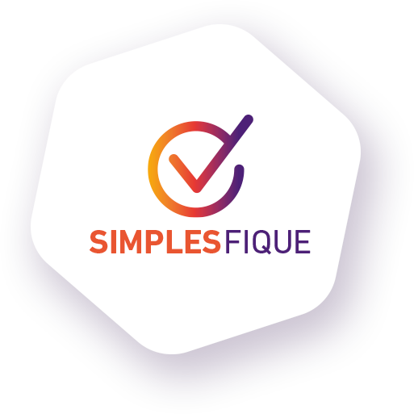

Bons processos evitam a burocracia
Processos de trabalho, para serem eficientes, precisam permitir uma sequência lógica de ações e, cada vez mais, contribuir para a racionalização de recursos, inclusive o tempo. Quando esses processos são excessivos ou mal dimensionados, o resultado é o aumento de burocracia, ineficácia e desperdício. Assim, com a ideia de reunir soluções para aumentar a agilidade e eficiência das nossas tarefas, a campanha SimplesFique foi lançada.
Para mostrar como as burocracias podem atrapalhar nossa rotina de trabalho,
realizamos três diferentes ações.
132h
Retiramos os copos de água e café das cozinhas e copas.
Para retirá-los era preciso se dirigir até o “guardião deste suprimento”, indicado no
comunicado, e assinar um formulário.
132h
Isolamos algumas áreas, como corredores e escadas,
Dificultando a passagem das pessoas,
que ficou limitada a uma por vez.
132h
Retiramos o papel sulfite das impressoras, dificultando a impressão dos documentos.
Para conseguir os papéis, foi preciso dirigir-se
até o “guardião deste suprimento”, indicado no comunicado, para retirar o material mediante
a assinatura de um formulário.